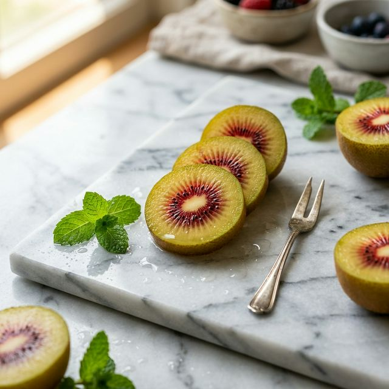

한 입 베어 무는 순간 퍼지는 강렬한 달콤함. 비타민 C가 풍부하고 항산화 성분이 가득한 루비 키위로 건강한 하루를 시작하세요.

우리가 사랑할 수밖에 없는 세 가지 이유
일반 키위보다 높은 당도를 자랑하며, 산미가 적어 남녀노소 누구나 즐길 수 있습니다.
붉은 과육에 포함된 안토시아닌 성분은 면역력 강화와 건강 유지에 도움을 줍니다.
엄격한 품질 관리를 통해 재배된 신선하고 안전한 프리미엄 키위만을 선별합니다.